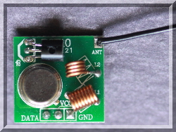
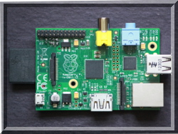

|  |  |
| pigpio pigpio C I/F pigpiod pigpiod C I/F Python pigs piscope Misc Examples Download FAQ Site Map | Download & InstallThe initial part of the make, the compilation of pigpio.c, takes 100 seconds on early model Pis. Be patient. The overall install takes just over 3 minutes. Download and install (V75)
wget https://github.com/joan2937/pigpio/archive/v75.zipIf the Python part of the install fails it may be because you need the setup tools. sudo apt install python-setuptools
python3-setuptoolsTo check the libraryThese tests make extensive use of GPIO 25 (pin 22). Make sure nothing, or only a LED, is connected to the GPIO before running the tests. Most tests are statistical in nature and so may on occasion fail. Repeated failures on the same test or many failures in a group of tests indicate a problem.To compile, link, and run a C programgcc -Wall -pthread -o foobar foobar.c -lpigpio -lrtTo start the pigpio daemon
sudo pigpiod
To stop the pigpio daemon
sudo killall pigpiodgithubgit clone https://github.com/joan2937/pigpioRaspbian (raspberrypi.org image)This may not be the most recent version. You can check the
version with the command pigpiod -v. sudo apt-get update |
[pigpio]
[pigpio C I/F]
[pigpiod]
[pigpiod C I/F]
[Python]
[pigs]
[piscope]
[Misc]
[Examples]
[Download]
[FAQ]
[Site Map]
© 2012-2020 |
e-mail: pigpio @ abyz.me.uk |
Updated: 30/04/2020 |